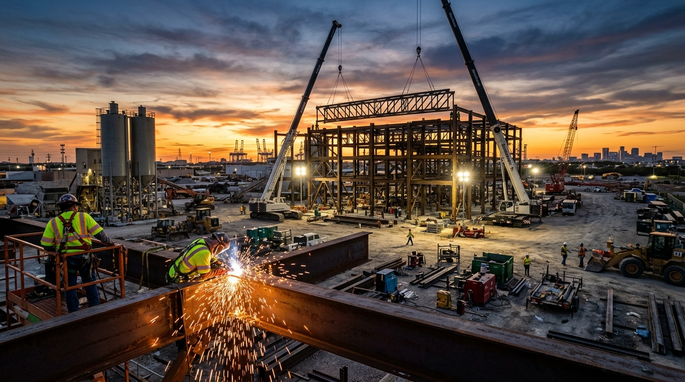

Certified Veteran-Owned Enterprise · Fort Worth, Texas
Certified Veteran-Owned Enterprise · Fort Worth, Texas
Direct Commercial Line: (817) 607-8873
Certified Veteran-Owned Enterprise · Fort Worth, Texas
Headquartered in Fort Worth, Junction Industries deploys specialized field crews, heavy foundation drilling rigs, and industrial fabrication capacity across every major Texas industrial corridor.
Explore our regional territory hubs. Each hub coordinates rapid mobilization for heavy civil foundations, EPC batch plants, structural steel erection, and facility modernization.
 Corporate Headquarters
Corporate Headquarters
Corporate executive offices, central equipment dispatch, and design-build EPC headquarters at 3348 Peden Road, Suite 600. Serving the I-35W, I-820, and Hwy 287 heavy industrial corridors.
 Logistics Corridor
Logistics Corridor
High-density automated parking systems, warehouse distribution conveyors, and commercial foundation drilling serving the I-30, I-20, and Trinity industrial distribution hubs.
 Gulf Coast & Marine
Gulf Coast & Marine
Heavy structural steel fabrication, petrochemical equipment skids, port transload terminals, and marine piling serving the Houston Ship Channel, Baytown, Freeport, and Beaumont.

Energy InfrastructureHeavy industrial foundation drilling, frac sand transload terminals, equipment laydown yards, and turnkey concrete batch plants serving the Delaware and Midland energy basins.
 I-35 High Growth Corridor
I-35 High Growth Corridor
Central Texas ready-mix concrete batch plants, high-density automated vehicle storage, and bedrock foundation drilling along the explosive I-35 commercial and industrial corridor.